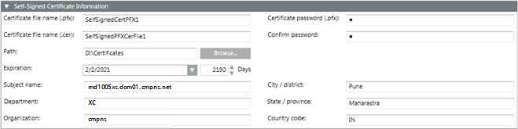

Self-Signed Certificate (.pfx) Information Expander
When you click Create Certificate > Create Self-Signed Certificate (.pfx), the Self-Signed Certificate Information expander displays. This allows you to create a .pfx self-signed certificate. Once you set the self-signed certificate as default, during website and web application creation, it displays in the Certificate issued to field of the Details and Web application Details expander respectively.

Self-Signed Certificate Information Expander | |
Name | Description |
Certificate file name (.pfx) | Type the file name of the .pfx self-signed certificate. The certificate file name must not contain blanks or special characters (/,\,?,<, >,*,|,"). |
Certificate file name (.cer) | Type the file name of the self-signed certificate with .cer extension. Note that the .pfx file contains both key and certificate; however, the .cer certificate file contains only the certificate. The certificate file name must not contain blanks or special characters (/,\,?,<, >,*,|,"). |
Certificate password (.pfx) | Type the password required to secure the certificate. |
Confirm password | Re-enter the password. |
Path | Browse for the location to store the certificate on the disk. |
Expiration | Set the validity period. Once a certificate's validity period is over, a new certificate must be requested by the subject of the now-expired certificate. By default, the certificate expires after 2190 days. |
Subject Identifier Information | Allows you to provide the subject's identifier information:
|
NOTICE

Validity of Self-Signed Certificates
Self-signed certificates allow local deployments without the overhead of obtaining commercial certificates. When using self-signed certificates, the owner of the Desigo CC system is responsible for maintaining their validity status, and for manually adding them to and removing them from the list of trusted certificates.
Self-signed certificates must only be used in accordance with local IT regulations (several CIO organizations do not allow them, and network scans will identify them). Importing the commercial certificates follows the same procedures.
You must ensure the compliant installation of the trusted material on the involved machines, for example, on all Installed Clients. In some organizations, this must be done by the IT organization.